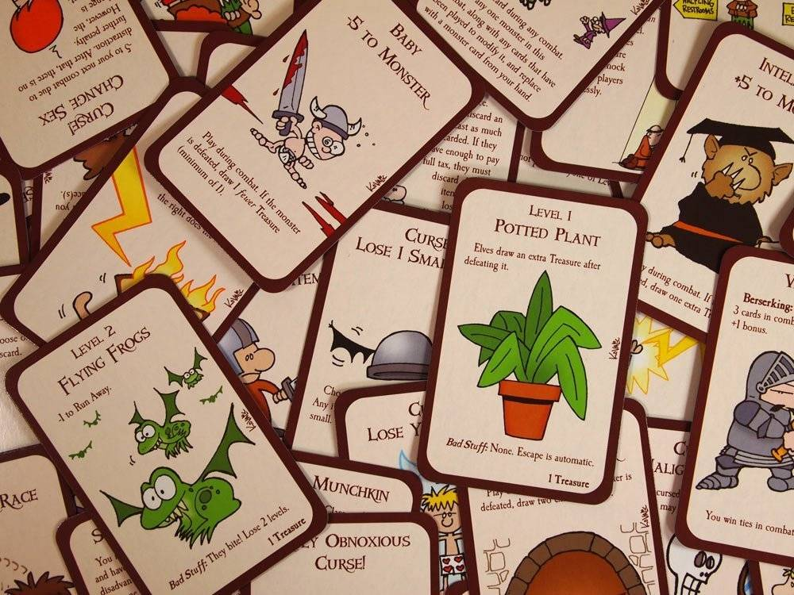
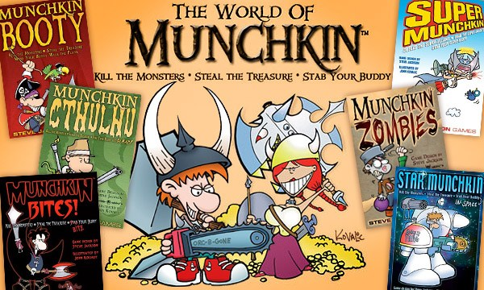
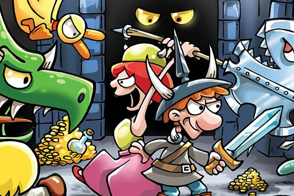
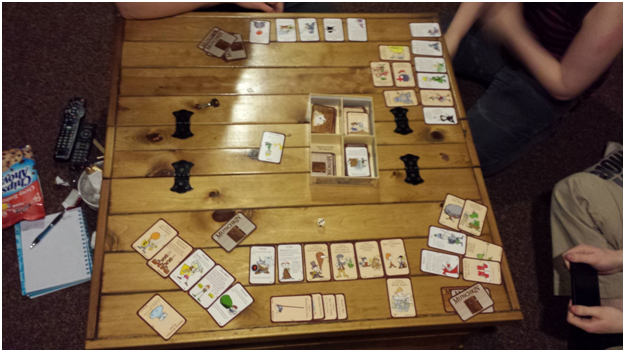

There we were, a dimly lit cave that smelled of stale water. My nostrils burned and my eyes were stinging as I inhaled the thick smoke left behind by the torch. Our group had ventured into the cave, winding our way deeper down into the earth. Our goal - the entrance to a forgotten dungeon rumoured to be located somewhere in this underground maze of tunnels and caverns. Our party consisted out of four adventurers. There was Pat, who was carrying the torch, a task assigned to her as the least experienced member. She was a dwarf armed with a “Huge Rock” and a “Swiss Army Polearm”. To this day I can not understand the multitude of choices that pole arm provided and the rock well, as its name states, it is huge. Then there’s Damien the Cleric, with his “Cheese Grater Of Peace”. Many a creature have met their grated end to his wrath. We often did spend long hours waiting for him to finish cleaning all the bits out of the finest grating grade. Perhaps small in stature but not to be underestimated there was Alex the half ling. She knew how to handle the “Limburger And Anchovy Sandwich” like no other. I witnessed a mass of “Snails On Speed” melt into puddles of slimey goo as they neared her wielding that smelly sandwich. Just the thought of it is sending a shiver down my spine. Lastly there is me, the halfbreed, both human and elf, running around in my “Boots of Butt-Kicking” and dragging my “Rapier Of Unfairness”. That over-sized thing has often provided me the upper hand in an Unfair fight.

We finally reached the entrance. The door looked remarkably well preserved despite the conditions the cave provided. As I was about to discuss the strategy on how to proceed. Damien kicked down the door and squared off against the “Gazebo”. He reached for his grater and lunged for the wooden stairs. The “Gazebo” retaliated, it lifted one of its heavy beams and attempted to hit Damien over the head. Right before the beam connected with his head, Damien shouted out for assistance. But all in the party knew, you faced the “Gazebo” alone. None could aid you. An opportunity arose and we moved on and leaving Damien to fight his foe. After handing me the torch Pat threw her weight against the next door and as it flew open there was a sudden flash of light. As our eyes adjusted to normal light levels we heard the sound of a clucking chicken. Squinting and turning my head into the direction of the sound I saw Pat, on the floor, door underneath her and with a chicken on her head. Picking herself up, I could see by the expression on her face, she knew she was cursed.

As an egg rolled from Pat’s head onto her shoulders and went crashing down to the floor. I bulged my muscles and charged at the next door. As I watched the nearing door and prepared for the impact, the door swiftly swung open. Wide eyed I flew into the next room, my momentum propelling me forward until my feet made contact with a black leather briefcase. I tripped and slammed on the floor. As I get back to my feet, I look over my shoulder at the door. “Why are they looking so fearful? Oh wait! NO! the briefcase!” is what goes through my head as I realize what I am facing. I turn my head and lock eyes with , the Level 14 “Insurance Salesman”. No time to loose. “Help me, I will split the reward!” I yell out. Luckily both of my remaining party members know what is to be gained in defeating this foe. I lunge forward with my rapier and out of the corner of my eye I see a huge boulder accompanied by an egg arc through the sky. Putting weight on one foot and pivoting around forcing the rapier to gain momentum for a slashing move I see the boulder hit our adversary square in the face. Not wanting to shatter my blade on the boulder I adjust the direction mid swing and end up missing the salesman. However, I think the deed was already done. I see his hand reach for the sky. The only part of him not covered underneath the boulder. It is clutching an insurance form. I wipe the sweat from my brow, thinking that this could have gone worse.

We decided to catch our breath before we braved the next door. A loud noise coming from the previous room caught our attention. It was a familiar sound though, it was, it was … it was Damien! Without regard for safety he ran past us, jumps over the boulder and crashes into Alex. In that moment of confusion, Alex let go of her curse incantation. A sudden strong gust of wind powered through the room and with a murmur the flame of our torch died out. After a few moments of frantically trying to re-kindle the torch it finally caught fire. “Is everyone, ok?” I lifted the torch higher to cast more light. Pat stood next to me and gave me a quick nod, we both looked at the boulder blocking the sight of our two other party members. Walking closer and circumventing the boulder we saw Alex standing over the body of a woman. My jaw fell open as I realised that, this was no ordinary woman. This was indeed our Cleric, Damien. As she regained consciousness and was made aware of the situation, the anger in her eyes, voice and entire being was very real. Without a word she ran for the door, opened it and disappeared.

Rather cautiously we approached the door, a sign was hung from the brass knocker. It read “Out for Lunch”. Letting out a sigh of relief we entered the room. Pat, less emotionally upset by what had happened in the last room, tried the next door. As the door slowly creaked open and we stuck our heads in the room. We saw and altar in the middle of the room, bathing in warm white colored light. On top of the altar an item was giving off a noticeable red glow. We recognised it straight away. The “Bad-Ass Bandana”. Knowing full well the power of this item, we slowly approached. I reached out and with respect, I lifted the bandana. As I bound the garment around my head. I heard a tune accompanied, by the following lyrics “It’s a long road, when you’re on your own. Every new town, just seems to bring you down.” I shrugged it off.
At the next door we found Damien or… should we call her Damina now? She had calmed down but I was sure the damage was done. Those two would not work together. This door looked impressive, seemed to me that all other doors led up to this final one. I opened the door and with slow movements entered the room. A series of bright flashes from behind me could not take my attention from the massive “Bullrog” towering over me. I yelled out “I need some help with this!” and went for my rapier. It .. it was not there? I turned around, my eyes wide! In horror I saw Pat smiling as she now brandished the Rapier, as well as the Bandana. I looked down, yes, even my boots were missing. I heard a roar and felt the heavy lash of a whip flay me so hard it lifted me of my feet and tossed me clean across the room. I collided with the far wall. Betrayal! I was balancing on the edge of consciousness. I saw both Damina and Alex, robbed of all possesions lifeless on the floor. As I felt the life leave my body I saw Pat engage the beast. With all she had taken, there was no chance she would loose against that foul beast. Darkness fell over me.
Surprised at how a new player had grasped the concept of munchkin so quickly and had beaten players who knew what was waiting at end game, I laughed. We had brought munchkin along for a visit to a close relative of ours. She was new to the game. In the end she trumped all of us by clever usage of cards at end game. This is how the above story was born and it does give a fairly good insight into a game of Munchkin.
Munchkin is a game of cooperative play, until end game is in sight, then … it is everyone for themselves. Fighting monsters, grabbing treasure and back-stabbing fellow players at important moments, are the key building blocks for this game. It comes in a wide variety of themes and editions. All of this covered in a nice sauce of pop cultured humour and wit. When we bought our deluxe version at the local game store, again inspired by Tabletop. I was not sure what to expect. It was only after a few playthroughs that I saw how dangerous this game could be. How, when played with people not prepared to be suddenly ganged up on by the other players, it could lead to hurt feelings. Playing treacherously in this game is rewarded, so you have to make people aware beforehand and and make sure that they understand. If that is well managed, then Munchkin is a very enjoyable game. The wide variety and expansion for this game can lead up the more ludicrous dungeon crawls.